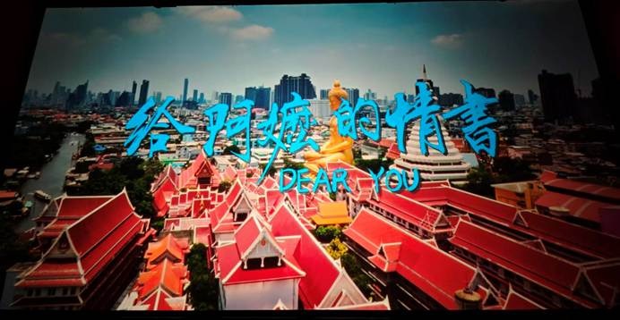
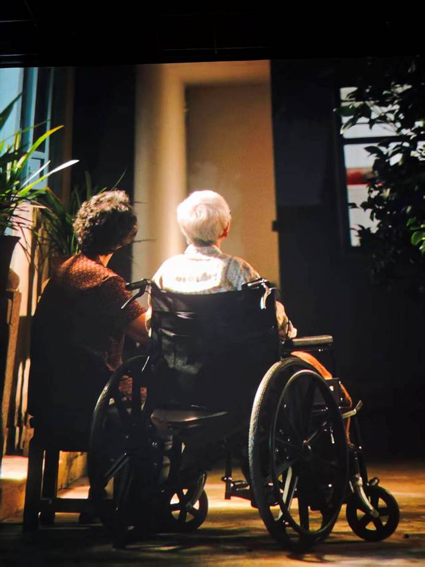

当熟悉的潮音响起，当银幕上浮现出工夫茶升腾的氤氲水汽，当橄榄菜的咸香仿佛穿透光影扑面而来时，作为一个潮汕人，心底最深处那根关于“根”的弦，被轻轻拨动了。这不仅仅是一部电影，更像是一次集体的寻根，一次对祖辈记忆的深情回望。导演蓝鸿春用他一贯的真诚与细腻，将镜头对准了那些被时光尘封的“侨批”，也对准了我们血脉里流淌的坚韧与情义。

最让我感动的，首先是刻在潮汕人骨子里的精神图腾——那种在海外异乡，同胞之间不分彼此、守望相助的团结与温情。电影里，南枝到银信局想寄木生讣告时，潮汕人相互帮助的一幕，朴实无华，却有着直击人心的力量。这不仅是潮汕人的特质，更是所有华人漂泊在外时，那份“胶己人”的宝贵情谊。它告诉我们，无论走多远，那份源自故土的认同与扶持，是支撑我们走过艰难岁月的最温暖的光。
其次，是两位伟大的潮汕女性所展现出来的自立自强与高风亮节的拼搏精神。影片没有将她们塑造成苦情戏里等待救赎的怨妇，而是赋予了她们真实的血肉与灵魂。故乡的阿嬷，在阿公过番失联后，独自一人扛起家庭重担，将平凡的日子过得有条不紊，她的温柔里藏着不动声色的倔强。而远在南洋的南枝，更是用一生的坚守，诠释了何为“情义”二字。她们如同大地上最坚韧的植物，在风雨中默默生长，用柔弱的肩膀撑起了家族的希望与传承。

再然后，是那段相隔万里、跨越生死的伟大爱情。它没有轰轰烈烈的誓言，却在“平安当大赚”的谎话里，在数十年如一日的书信中，在寄回的腊肉与自行车等细节里，写尽了最深沉的爱恋与牵挂。当阿嬷得知真相，没有歇斯底里，只是轻轻抚着信纸说：“我等的不是钱，是一句我回来了。”那一刻，所有的眼泪都找到了决堤的出口。这份爱，超越了简单的男女之情，升华为一种对承诺的坚守，对故土的眷恋，以及对生命本身的尊重。
剧情方面就不多说了，优秀到让我不想透露一丝一毫，请你务必到影院欣赏原汁原味的绝美剧情。每一个反转，每一次情感的递进，都恰到好处，笑中带泪，后劲十足。
其实，作为潮汕人和广财的学子，我有着双倍的感触。首先是扎根于生活，而高于生活的艺术创作永远是能最打动人心的。当你用潮汕人的语境打开镜头，那些藏在祖辈话语里的心酸与亲密就会更加势如破竹地闯进胸膛。看到广财的潮汕学姐作为主演出演了这么优秀的电影，也是十分自豪，倍感荣幸。她饰演的南枝，仿佛就是从我们身边的长辈故事中走出来的，那份真实感，让人信服，也让人动容。
这封《给阿嬷的情书》，写给的不只是电影里的阿嬷，更是写给每一位在岁月长河中默默坚守的潮汕先辈，写给我们共同的乡愁与情义。它让我们懂得，最动人的情感，从来都藏在平凡的日子里，藏在一封家书、一顿饭菜、一句叮嘱里。愿我们都能读懂这份温柔与坚韧，珍惜身边的亲情，铭记自己的根与来路。